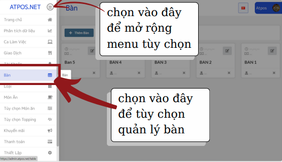
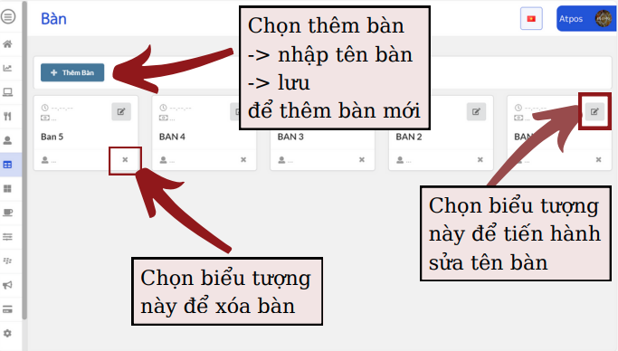

Quản lý bàn thêm sửa xóa
Bước 1: Truy cập vào app quản lý hoặc website quản lý
https://admin.atpos.net/
Bước 2: Chọn mục Bàn ở bên trái màn hình

Chức năng quản lý bàn: Thêm bàn, sửa bàn, xóa bàn

Lưu ý: thứ tự bàn sẽ hiện thị lần lượt theo thời gian tạo bàn, bàn tạo ra trước sẽ hiện thị trước. Bàn tạo ra sau sẽ hiện thị sau
Quay lại mục lục